單元二 · 人生第一問
終極關懷
什麼是值得活、且有意義的人生？
進入全螢幕．開始上課
孫效智 | 臺大生命教育研發育成中心 第十期師資培育學分班 | 台北班 Day 2
跳到最後一頁
今天的地圖：六節課，一條路
上午問「什麼是值得活 的人生」，下午問「人生本身有沒有意義 」——一條從終極理想走向終極信念的路。
第 1 節 序曲《一路玩到掛》× 為何終極關懷如此重要（09:10–10:00）第 2 節 「終極關懷」關懷什麼（10:10–11:00）第 3 節 什麼是值得活的人生（11:10–12:00）── 上午 meaning in life ｜ 下午 meaning of life ──
第 4 節 死亡是牆還是門（13:00–13:50）第 5 節 生命意義的探索（14:00–14:50）第 6 節 總結（15:00–15:50）
今天，我們會走過這八站
一條從「人為何而活」走向「人生無常，唯愛永恆」的路。
壹 序曲：一路玩到掛 ——用一部電影，叩問「門」與「牆」貳 終極關懷為何如此重要？ ——人生風暴與終極願景參 「終極關懷」關懷什麼？ ——從人們對美好人生的想像說起肆 究竟什麼是終極關懷？ ——四層次反思與人生第一問伍 什麼是值得活的人生？ ——對人性渴望的肯定與反思陸 值得活的人生 ——終極理想的四個面向柒 生命意義的探索 ——死亡，是牆，還是門？捌 總結 ——人生無常，唯愛永恆
壹
序曲：一路玩到掛
這份《一路玩到掛》觀後心得，你已在課前完成並繳交。今天，先在小組裡互相聽見彼此最被觸動的那一點。
卡特遺書與愛德華悼詞
「當我長眠在有著一扇門的一堵牆外面時，
電影《一路玩到掛 The Bucket List》（2007）。這組「門」與「牆」的意象，正是今天要陪大家一路問到底的母題——它最後會以什麼方式收束，留到下課前揭曉。
這部電影，直面了死亡與虛無這兩道人生最難的課題。
掃你那一組的 QR，把全組精華打上來
請各組派一位同學 ，掃描你們那一組的碼，全組最有啟發的一點 」（一句話＋為什麼），投影幕即時更新。
分組：第1–4組依靈修小組（每組至多 10 人），人數超出者併入第5組綜合組 。
貳
終極關懷為何如此重要？
人需要一個能撐過風暴的人生願景——這正是終極關懷如此重要的原因。
健康無價！
大病後，人常驚覺「健康無價」。
但，健康一定能維持嗎？生老病死可以避免嗎？
以健康長壽為終極目標的人生，就圓滿了嗎？
耶魯大學的人生思辨課與 Angela Williams Gorrell
Angela Williams Gorrell 與《Life Worth Living》三位作者
Angela Williams Gorrell 到耶魯大學從事喜樂神學 的研究，並與《Life Worth Living》三位作者一起教授「值得活的人生 」這門課。
然而就在那段期間，她接連在四個星期內失去三位親人 ——使得「研究喜樂、卻同時與苦難共處、並度過苦難」，成為她當時最切身的功課。
Gorrell 的「人行道時刻」
我打開車子的右前門，從腳墊上撿起我的手機。達斯汀自殺了。 」……不要！ 」，一邊哭，一邊要她告訴我，那不是真的……我的手機滑落在教會停車場的人行道上——我開始號啕大哭。
—— Angela Williams Gorrell《喜樂的萬有引力 The Gravity of Joy》（引自《耶魯大學的人生思辨課》p.234）
人生風暴與終極願景
在最後一堂課，安琪拉說完故事後看著所有學生，教室陷入肅穆的沉默。她深吸了一口氣，對他們說：
「我希望你們能有一種人生願景 ，能夠支持你撐過那個人行道時刻 。將來可能會有那麼一天，世界停止轉動了，你的心碎了。那時，你需要一個值得你用此生追求的人生願景，幫助你度過那個人生風暴。當然，你的願景會因為那些人行道時刻變得更有深度、得到轉化、變得更清晰；但我希望你現在的願景，已經有可以為你指引方向的羅盤 ，或是可以使你穩穩定住的船錨 。」
那天，所有人離開教室時都覺得：我們的繁盛人生願景，受到了人生中「人行道時刻」的考驗，變得更精煉了。要挺過人生的風暴，你需要的不只是對「值得活的人生」有扎實的概念——但如同安琪拉所說的，如果你的船上現在已經有了船錨，總是比較好。
——《耶魯大學的人生思辨課》p.234–235
參
「終極關懷」關懷什麼？
先從人們對「美好人生」的素樸想像說起——再一起追問：這些，是終極關懷嗎？
臺大學生的夢想清單 以 2024 臺大新生講座為例
人生意義與關係
找到人生意義與目的、結交知心好友、與家人感情融洽
學業與職涯
國外交換、起薪百萬
臺大教師的夢想清單 與學生同一份問卷·教師版
安頓生命 擁有安頓生命的終極信念或宗教信仰
家庭 兒女升學就業順利、家庭幸福、陪伴照顧父母安度晚年
健康善終 健康快樂的退休與老年、無病無痛在睡夢中壽終正寢
美國新鮮人的夢想清單 2019 CIRP Freshman Survey
有錢 84.3%
幫助困難中的人 80%
成立家庭 71%
瞭解其他國家與文化 62.1%
專業上獲得肯定 55.5%
發展自己的人生哲學 49.8%
臺大學生 vs 美國大一新生：同與異
相同之處
都重視家庭與成家 、真摯的友誼
都有不少人把「人生的意義」 列為重要
都關心幫助他人、利他
不同之處
臺大學生把「找到人生的意義、目的、價值」 放在第一（票數遙遙領先）
美國新生則以「經濟富足」 名列前茅，物質取向相對明顯
人生夢想清單：臺大學生 vs 臺大教師
學生版
找到人生的意義、目的、價值
結交五位終身的知心好友
畢業後能進入起薪百萬的跨國企業工作
成功申請交換學生，至國外留學生活一年
與家人感情融洽，無話不談
遇到天菜，與他／她有一段穩定的感情發展
教師版
享有健康快樂無憂的退休生活與健康老年
兒女升學順利、就業穩定、家庭幸福
無病無痛，在睡夢中壽終正寢
擁有安頓生命的宗教信仰或終極信念 能夠陪伴照顧父母安度晚年
結交五位終身可靠的好朋友
一般人對美好人生的想像（一）：四面佛
四面佛所祈求的，正是一般人心中的「美好人生」：
事業 ：學業、事業、官位、名望感情 ：愛情、婚姻、家庭、人緣財富 ：正財、橫財、偏財、財運健康 ：平安、治病、親友健康
一般人對美好人生的想像（二）：健康・快樂・長壽・財富自由
這四項，是現代人很普遍的人生理想。
一般人對美好人生的想像（三）：人生座右銘
「Difficult roads lead to beautiful destinations.」
有志者，事竟成
知識就是力量
一日之計在於晨
要怎麼收穫，就要先怎麼栽
天下無難事，只怕有心人
失敗為成功之母
一分耕耘，一分收穫
天道酬勤
這些想像，是「終極關懷」嗎？
先別急著答——用四個問題，量一量我們與「終極關懷」的距離。
❶ 我們投入時間、心力去做的各種事，真的讓我們更趨近夢想與目標 嗎？
❷ 這些夢想或目標，是階段性 的，還是整體人生 都值得追求的？
這些想像，是「終極關懷」嗎？（續）
❸ 我們追求的一切，經得起無常與死亡 的考驗嗎？
❹ 我們現在的一切努力與追求，能答覆生命意義 的問題嗎？
肆
究竟什麼是終極關懷？
從「我想要什麼」，提升到「什麼才值得追求」——這是人生第一問從實然到應然的提升。
反思，讓人從盲從變得清明
「未經反思的人生，是不值得活的人生。」—— 蘇格拉底
「吾日三省吾身。」—— 曾子《論語·學而》
素樸的渴望若不經反思，人就只是隨本能或主流價值 而活。反思，是讓我們有能力去問：在這麼多想要的東西之中，什麼才真正值得追求？
反思的四個層次
反思才能開啟追本溯源的後設思考，從不假思索的表層向內探索，直達自我超越的終極關懷層，以進行人生第一問的探問。
層次 意識狀態 它在問什麼 對應人生問題
不假思索 出於習慣 照平常那樣做就好 慣性與習氣 工具理性層 追求效能 我做的事，能幫我得到想要的嗎？ 人生第二問（怎樣活·價值思辨） 目的理性層 自我覺察 我到底要什麼？階段目標符合整體想像嗎？ 人生夢想（遺澤）清單 終極關懷層 自我超越 什麼才是真正值得追求的至善人生？ 人生第一問（為何活）
人生在世，究竟所為何事？
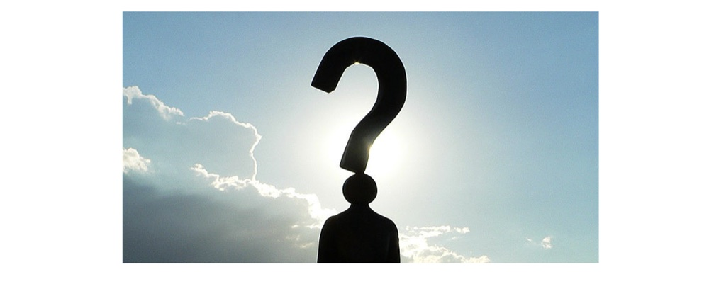
終極關懷要問的，不是個別階段 的目標，而是整個人生 的目標；
也不是整個人生我「想要」 追求的目標，而是我「應」 追求什麼目標——什麼才是值得追求的人生？
人生第一問：人（我）應為何而活？
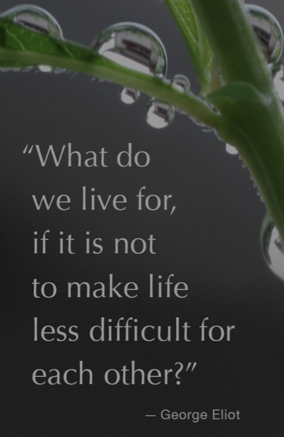
「我們活著是為了什麼，若不是為了讓彼此的人生少一點艱難？」—— George Eliot
什麼樣的人生，值得人／我追求？
這問題超越了原來的夢想清單 ，向更普遍的方向探問：對一個人而言，什麼是值得追求與活出的至善目標 ？
這是終極關懷的探問 ，使「為何而活」從實然 提升到應然 。
探問所建立的終極理想與終極信念 ，正是人生價值體系的根基 。
終極關懷層與自我超越的反思
工具理性層的追求效能與目的理性層的自我覺察都是很重要的反思：前者以後者為前提，後者又以自我超越的反思 為基礎。
自我超越的反思，關乎人生終極信念與價值觀 ，涉及更大的客觀真理，能修正我們對人生夢想清單及「美好人生」的想像 。
它是第四層次、最究竟的反思 ——亦即終極關懷層的反思。
很多人終其一生沿著梯子向上爬，到頂時才發現——梯子靠錯了牆。
終極關懷與東西方思想
終極關懷要探討整體人生客觀上可能達到的最高理想，東西方思想都用「至善」這個概念去表達這個理想。
傳統／語言 表達「至善」的用語 意涵
中國哲學中的《大學》 止於至善 至善概念的中文源頭 希臘哲學 εὐδαιμονία（eudaimonia） 西方「至善」的源頭 拉丁／士林哲學 bonum summum the highest good（最高善） 當代英文 flourishing 傳遞「至善」的當代義蘊
a life of flourishing ＝ Life worth living ＝ a life of eudaimonia
終極關懷兩層面
什麼是值得的人生？
Life worth living ＝ a life of flourishing
追求自身幸福就夠了嗎？
什麼是有關「值得的人生」的終極理想？
人生是否有意義？
Life of flourishing shall be a life of meaningfulness
生命本身究竟是怎麼一回事？其終極實相究竟如何？生命有何意義？
要如何建立有意義的人生的終極信念？
人生無常，唯愛永恆？
值得活而有意義的人生是主觀的嗎？
若我值得活的人生或有意義的人生純屬主觀，那為什麼——
快樂 ≠ 幸福 不懂分享、沒有親密關係的人，擁有再多也不幸福
「施比受更有福 」幾乎跨越所有文化
幸福，似乎有某種客觀的、人性共通的標準 。
這正呼應第四層次的自我超越，也通向值得活的人生很重要的一個面向……
王榮麟 2020〈終極關懷〉教學大綱。
人性的渴望（一）：健康與長壽
健康 的重要不言而喻——不健康意味著痛苦，甚至預告死亡；人人都怕痛苦與死亡，因此人人追求健康。長壽 源於生存本能、對死亡的恐懼、享受人生與對未來的期待。但若無法享受人生、又困在無法恢復的病痛中——長壽而不健康，不易是人們認可的「值得活的人生」 。
人性的渴望（二）：財富自由
「年輕時，我以為錢是人生最重要的；現在我老了，我懂了——確實如此！」
Oscar Wilde：When I was young I thought that money was the most important thing in life; now that I am old I know that it is.
金錢雖非萬能，沒有錢卻萬萬不能。
Michael Sandel《What Money Can't Buy》正是要處理：如何防止市場機制不斷侵入不該屬於金錢掌控的生活領域——「一個什麼都待價而沽的世界，難道沒有問題嗎？」
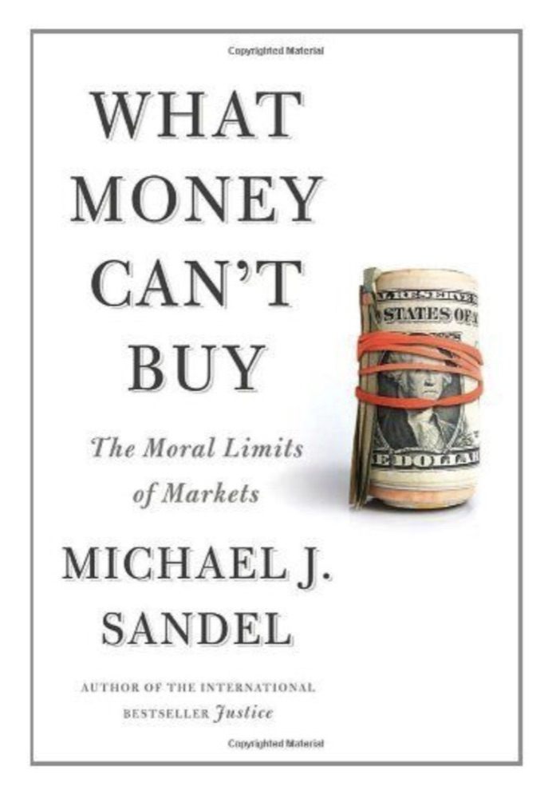
人性的渴望（三）：快樂
趨樂避苦，是人性最自然的渴望。
寒風刺骨、腳趾凍到失去知覺，你看見屋裡壁爐溫暖的火光向你招手；快步走近時卻被地毯絆倒，手掌落在炭火上——你因疼痛立刻縮手。
樂趣使人靠近，痛苦使人退避——我們趨樂避苦。 耶魯大學的人生思辨課，p.205。
素樸人性的共同渴望
大抵上，人們渴望健康、長壽、財富與快樂，這些渴望反映素樸人性的需要。
誰會希望 不健康、短命、失敗、窮困與不快樂的人生呢？
宗教與文化的肯定（一）：健康
佛教·文珠法師 ：健康簡直不可或缺——欠佳則無法完成學業、建立事業、享受人生；佛教徒更無法修行辦道、弘法利生。
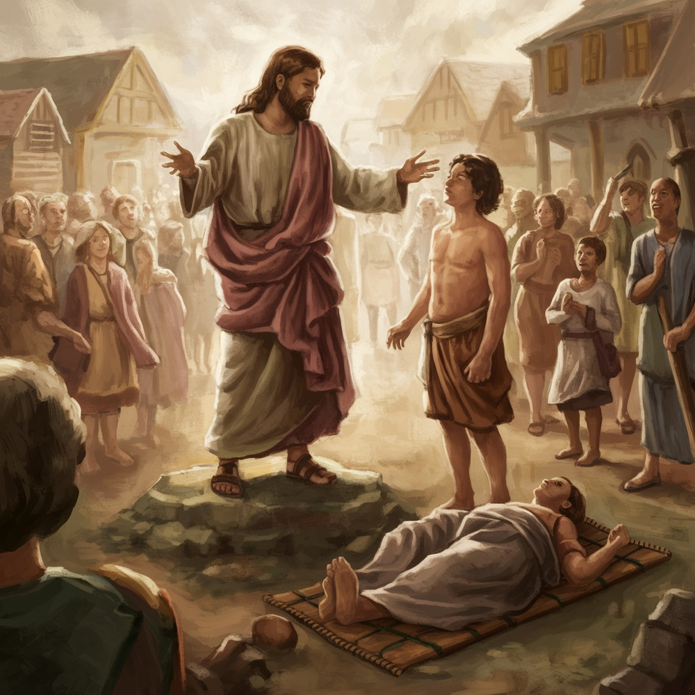
基督信仰 ：耶穌行醫治神蹟（治將死的王臣之子·若 4:50；治三十八年癱子·若 5:8），並差遣門徒「醫治病人、宣講天國」（路 10:9）。耶穌了解疾病的治癒與健康是人們的渴望。
宗教與長壽的關係
宗教信仰雖不直接延長壽命，卻透過減壓、社會支持、健康行為與心理調適，間接提升健康，從而可能有助長壽。
杜克大學 ：常參加宗教活動者，平均壽命長 7 年 。哈佛公衛 ：每週參加宗教聚會的女性，死亡風險降 33% 。加州大學 ：信仰虔誠的群體，心血管疾病發病率較低。
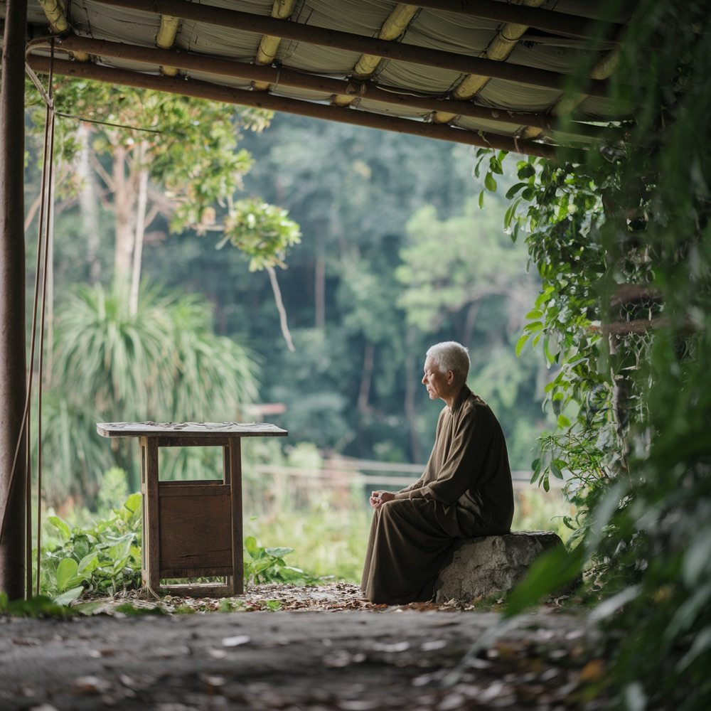
宗教與文化的肯定（二）：財富
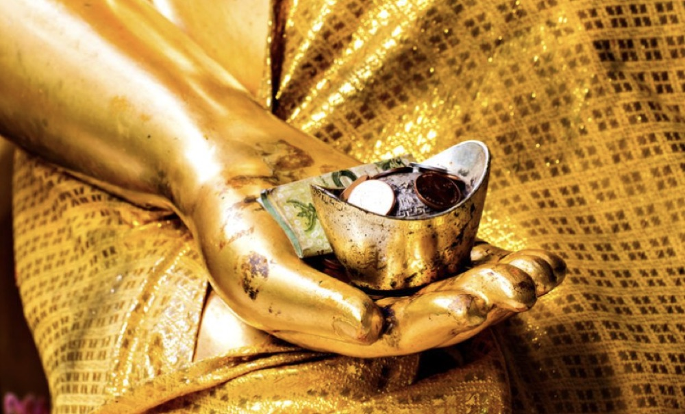
佛教 （印順、星雲）：財富是人人所希求的、一般人共同的願望，也是弘法修道的資糧 。
基督 ：「你們的父知道你們需要吃喝」（路 12:30）——不否定人的基本所需。
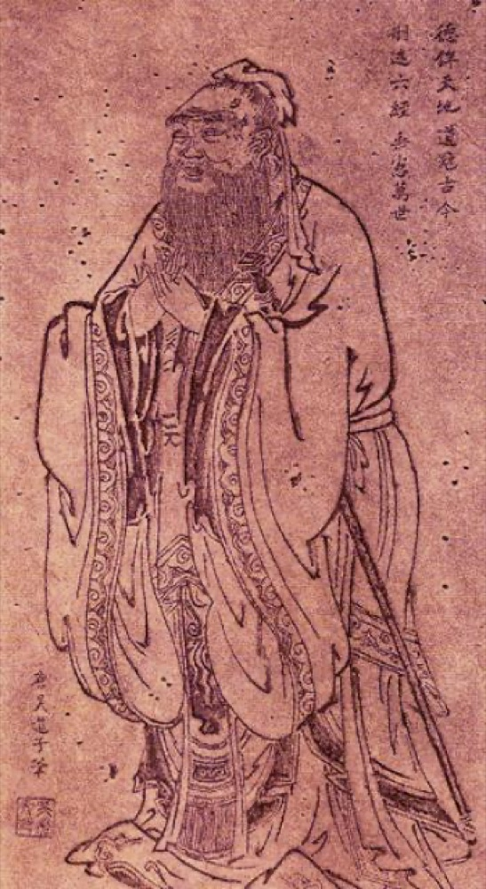
儒家 ：「富與貴，是人之所欲也」（論語·里仁）；孟子：「有恒產者有恒心」，穩定的財富能維持良好道德；韓劇《我的大叔》：「過得好的人，比較容易成為好人」。
宗教與文化的肯定（三）：快樂
一位母親來懺悔：女兒問她「該不該擔任學校運動社團經理？」她答——「怎麼做能讓你的大學入學申請書 看起來最漂亮？」女兒失望地離開，轉而去問輔導老師；輔導老師卻問：「怎麼做能讓你最快樂 ？」
母親說：「我當了一輩子基督徒，女兒來尋求有智慧的忠告時，我的忠告卻一點智慧也沒有。」
輔導老師的「智慧」似乎來自一個對美善人生更深、更完整的願景，而且不是隨隨便便的一個美善人生願景，而是現今社會最受歡迎的願景 。與追求成功、唯物主義以及成名的渴望這些俗氣的願望相比之下，這個願景顯得有深度、不虛假而且觸及人性。
耶魯大學的人生思辨課，p.60–61。
傳統的批判反思（一）：佛教
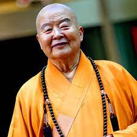
健康與疾病非絕對善惡——病是入道的因緣，有病才知道要發道心 ；一般人希望長命百歲，但世間的長壽不究竟，並非該追求的目標 。（星雲法師·佛教的福壽觀）
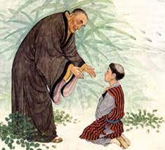
「父死、子死、孫死」是吉祥話，還是不吉祥的話？誦經增壽，增多少都不夠，也逃不過生死無常。人生當求無量的壽命——與真理融和一體、永恆不死的無限生命 。（良寬禪師）
財富非善非惡，可以是毒蛇，也可以是資糧。 （印順法師、星雲法師）
對「離苦得樂」的反思： 人有趨樂避苦的本性，但須擁抱痛苦——苦難是化了妝的祝福 ；佛教的「樂」非世俗短暫之樂，而是內在解脫的清淨究竟之樂，且含願一切有情離苦得樂的慈悲 。
傳統的批判反思（二）：基督信仰
健康 ＝身、心、靈的整體平衡——不只身體無病，更含心理的安定與靈性的充實。敬畏神、保持喜樂、適當運動、飲食節制、樂於助人，都是聖經所鼓勵的健康生活；信仰更給人內在的平安與盼望，使人以感恩與信心面對疾病與挑戰。
長壽並非終極 ：肉身的長短不是重點——耶穌自己只活了 33 歲 ，且遭構陷而橫死，並提醒門徒不要害怕只能殺害肉身的人（路 12:4–5）。歷來無數基督徒不怕為信仰捨身：庚子教難、西班牙內戰約 7000 名神職人員被殺、聖母聖心愛子會一修道院 51 位會士同日集體殉道。
西班牙內戰：民兵槍擊耶穌聖心像（1936）
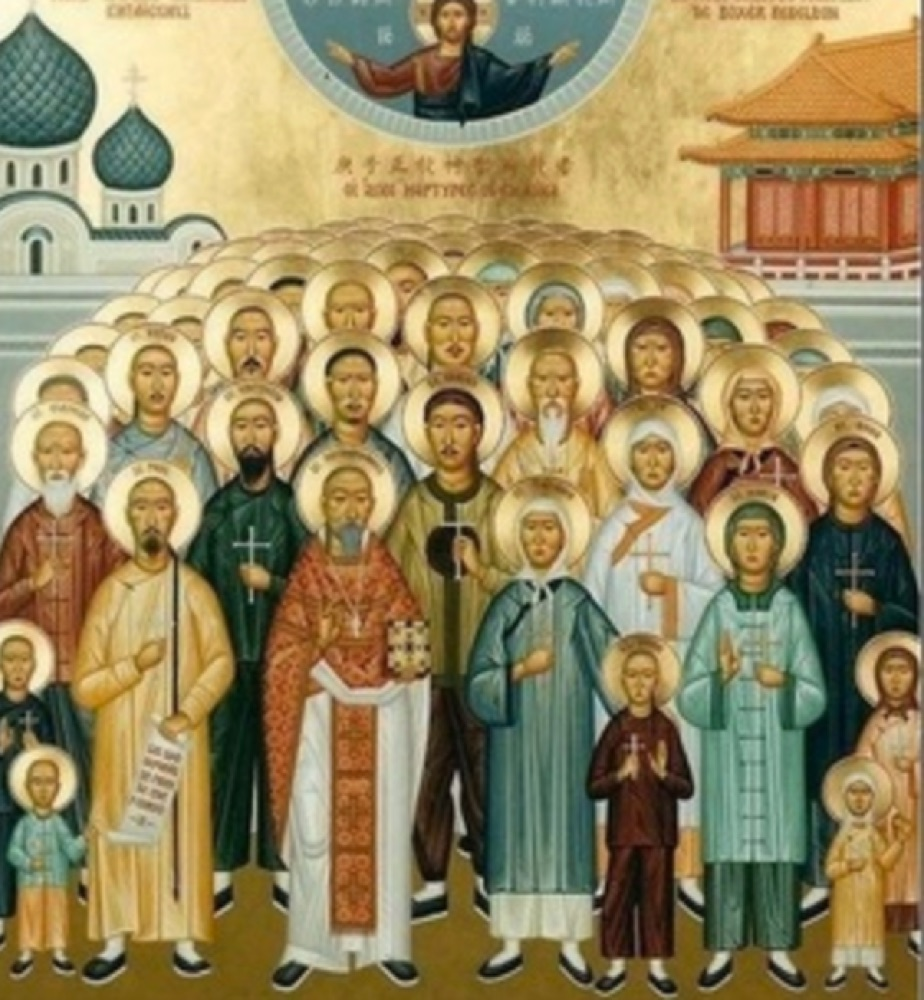
庚子教難·中華殉道聖人（1900）
基督信仰的財富觀
路加福音 12:15–21
15 遂對他們說：「你們要謹慎，躲避一切貪婪，因為一個人縱然富裕，他的生命並不在於他的資產。」
16 耶穌對他們設了一個比喻說：「有一個富人，他的田地出產豐富。
17 他心裡想道：我可怎麼辦呢？因為我已沒有地方收藏我的物產。
18 他遂說：我要這樣做：我要拆毀我的倉房，另建更大的，好在那裡收藏我的一切穀類及財物。
19 以後，我要對我的靈魂說：靈魂哪！你存有大量的財物，足夠多年之用，你休息罷！吃喝宴樂罷！
20 天主卻給他說：糊塗人哪！今夜就要索回你的靈魂，你所備置的，將歸誰呢？
21 那為自己厚積財產而不在天主前致富的，也是如此。」
傳統的批判反思（三）：儒家
孟子 ：「魚，我所欲也；熊掌，亦我所欲也。二者不可得兼，舍魚而取熊掌者也。生，亦我所欲也；義，亦我所欲也。二者不可得兼，舍生而取義 者也。所欲有甚於生者，所惡有甚於死者——非獨賢者有是心也，人皆有之，賢者能勿喪耳。」孔子 ：「飯疏食飲水，曲肱而枕之，樂亦在其中矣。不義而富且貴，於我如浮雲 。」（述而）顏回 ：「一簞食，一瓢飲，在陋巷，人不堪其憂，回也不改其樂 。」
生命與道義，重於富貴——富貴並非「值得活的人生」之必要條件。
小結：主流價值的限度
健康、長壽、財富、快樂都是人性自然的渴望 ，三大傳統也都誠實肯定其正面意義。
但它們都不是終極 ：長壽不究竟、財富非善非惡、快樂須有意義與慈悲、健康也非生命的全部，而且終將失去。
它們最大的共同限度，是容易停在自我中心 ——把「我」無限膨脹，缺乏與他者、與真理的連結。
終極理想的四個面向
真正值得活的人生，包含四個彼此相連的面向——接下來，我們一一展開。
一 自我超越 ——自我覺察、自我實現，並進一步超越自我二 與萬物及他者的連結 ——超越自我中心的愛三 經得起無常與死亡 ——以死亡為參照，照亮何為值得四 能答覆人生意義 ——活著的手段，不等於值得為之而活的意義
面向一：自我覺察、自我實現與自我超越
值得活的人生是反思的人生 ，因此人要在可能範圍內，不斷地向內、向深處覺察 ，並且進一步自我超越 ——這正回扣前面「反思的四個層次」。
靈性／覺性 意識層次 行動範疇 探索主題
無明／直覺 不假思索 習慣 出於直覺或慣性做事 工具理性 追求效能 策略 我所做的，能達到我要的目標嗎？ 目的理性 自我覺察 願景 我到底要什麼？ 靈性覺察 自我超越 真理 我想要的，真的值得要且具終極意義嗎？
面向二：與萬物及他者的連結
《我們只有10%是人類》一書指出： 人體只有 10% 是人類細胞、90% 是微生物（細菌比人類細胞多 10 倍）。
2016 最新研究修正： 以 70 公斤成年男性為例，約 38 兆個細菌 vs 30 兆個人類細胞 ——比例其實接近 1:1 。
數字被修正，結論反而更深刻：「我」從細胞層次起，就是一場與數十兆生命的共生——人，是與萬物交織、相互依存的共同體。
Alanna Collen (2015)；Sender, Fuchs & Milo (2016), PLOS Biology。
萬物一體之仁：王陽明《大學問》
「大人者，以天地萬物為一體者也。 其視天下猶一家，中國猶一人焉……見孺子之入井，而必有怵惕惻隱之心焉，是其仁之與孺子而為一體也；見鳥獸之哀鳴觳觫，而必有不忍之心焉……見草木之摧折而必有憫恤之心焉……見瓦石之毀壞而必有顧惜之心焉——是其仁之與瓦石而為一體也。 」
仁心本與萬物相連為一體；所謂「自我中心」，只是把自己看小了。
哈佛：幸福的核心，是美好的關係
哈佛成人發展研究主持人 Robert Waldinger（TED）；身後投影為同一受試者 19 歲與 47 歲。
哈佛成人發展研究——追蹤逾 80 年 、724 人，史上最長的幸福與健康研究。
最能預測晚年是否幸福、健康的，不是財富、名聲或成就，而是「關係的品質」 。
孤獨會傷人——長期孤立使早死風險增 約 29% （危害約等於每日抽 15 支菸）。
重點是「品質」不是「數量」：少數溫暖、可信賴的連結，勝過大量淺薄關係。
「好的關係，讓我們更快樂、也更健康。」Good relationships keep us happier and healthier. — Robert Waldinger
三校共識：值得的人生，是愛與慈悲的人生
值得活的人生不應是自我中心的，而應包含與他者的連結——哈佛、耶魯、柏克萊 的幸福學研究殊途同歸地指向同一件事：值得的人生，必須是愛與慈悲的人生 。
而美好的關係，需要這些質素——
同理
付出
信任
寬容
感恩
活得最好的人，是願意傾身投入家庭、朋友與社群 的人。
Harvard Study of Adult Development（Waldinger）；Holt-Lunstad 2010（社會連結強者存活率高 50%）；U.S. Surgeon General 2023。
面向二：True love 是超越自我中心的愛
「你愛魚，所以你把魚抓起來吃掉了——這不是愛魚，這是愛你自己。」
真正的愛，是為了對方的好而付出，不是把對方當成滿足自己的手段。愛賦予意義，愛就是天堂。
影片：True Love ≠ Fish Love（Rabbi Dr. Abraham Twerski）。
感恩，讓關係與幸福增長
寫下對你影響最深的人，打一通電話向他道謝——幸福感隨之上升。
感恩是美好關係的核心質素之一：它把注意力從「我」轉向「成就了我的那些人」，正是非自我中心之愛 的日常練習。
影片：SoulPancake〈An Experiment in Gratitude · The Science of Happiness〉（繁中字幕為本課自製）。
🎓 體驗活動：人生畢業禮
書寫＋互讀
想像自己 90 歲安詳離世——希望最親近的人，怎麼描述你是什麼樣的人？你最希望被記得的三件事 是什麼？
我最希望被記得的三件事——
4 人一組互讀（只讀「希望被記得的三件事」）。然後以終為始反推：既然希望被這樣記得，現在的人生該怎麼走？
（小組討論後，按 → 或空白鍵，進行下一步）
你會發現——被記得的幾乎都是愛與關係 ，而不是財富與享樂。
這正說明——被記得的，幾乎都是面向二 的內容：你與他者的關係、你曾給出的愛 ，而不是財富與成就。而「想像自己的離世」也已把我們帶進下一個面向——當人生以死亡為參照，什麼才真正值得？
面向三：經得起無常與死亡的挑戰
值得活的人生願景，如果忽略了「我們的人生終將以死亡終結」這個事實——無論我們是否努力地活過一生——就不算完整 。
死亡，逼我們把人生當「整體」來看：當時間有限，以死亡為參照，反而照亮了「何為值得」 。
參酌《耶魯大學的人生思辨課》，頁 238。
馬斯克的願景，觸及了死亡與終極意義嗎？
馬斯克的答覆：永續的未來、多星球物種、走向星際 ，以及隨之而來的冒險感——讓人對未來充滿興奮與期待，"makes life exciting and worth living"。
這是一種動人的自我超越。但它涉及了「死亡之限」與「生命本身的終極意義」嗎？
對許多人而言，這個夢想既遙遠，也並未處理「我終將死去」這件事——願景再壯闊，仍須經得起無常與死亡的考驗 。
影片：Elon Musk 論生命意義。
賈伯斯的最後省思：當生命即將逝去
躺上病床，他一生引以為傲的財富與名聲，此刻都已黯淡——再昂貴的病床換不回健康，積攢一生的財富也帶不走。
以死亡為參照，他看清：只顧累積財富其實很愚蠢，真正值得珍惜的，是健康、愛與關係 。
但這仍停在「弄清楚什麼最重要」，尚未碰觸「生命本身究竟有沒有意義」 ——那，是下一個面向要問的。
影片：Steve Jobs 最後一段話。
面向四：能答覆人生意義的問題
「我們完全可能知道『如何活的手段』 ，卻不知道『值得為之而活的意義』 。」It is thoroughly possible for us to know the means to live without knowing the meaning to live for.
活著的手段（means to live）≠ 值得為之而活的意義（meaning to live for）。前三個面向回答「什麼是值得活的人生」；第四個面向，把我們帶向更深的一問——
生命本身 ，究竟有沒有意義？這就是終極關懷的第二個層面——關於「終極信念」 的課題。
終極理想四面向
人性的渴望需要肯定，也需要超越——真正值得活的人生，包含這四個彼此相連的面向。
1
自我超越 在可能範圍內，自我覺察、自我實現，並進一步自我超越 （呼應四層次最高層）。
2
非自我中心的愛 不把「我」無限膨脹；核心是美好關係、付出、慈悲與愛。True Love ≠ Fish Love ——「愛賦予意義，愛就是天堂」。
3
經得起無常與死亡 忽略「人生會以死亡終結」的願景，就不算完整。觸及了死亡之限與終極意義嗎？
4
能答覆人生意義 means to live ≠ meaning to live for
柒
生命意義的探索
從「生命中的意義」，走向「生命本身的意義」——meanings in life vs. meaning of life。
安鈞璨參與《康熙來了》
人生無常，意義何在？
歌手安鈞璨 ，31 歲確診肝癌、兩週後離世。他生前最後的錄影問：「會不會有人記得我？」、「活著到底有什麼意義？」
（看完影片，按 → 或空白鍵）
各組掃 QR，上傳「組立場＋一句理由」
每組討論彙整一句組立場 （牆／門／不能確定，加上為什麼），
兩種不同的「意義」問題
同樣說「意義」，其實問的是兩件不同的事。
前面四大面向談的是「什麼是值得活的人生 」，亦即終極理想 的問題；接下來要追問的是第四面向的問題，也就是生命意義 的問題，而這個問題其實包含兩種問題，一個是回扣終極理想 的意義問題，另一個是更底層的有關終極信念 的意義問題：
Meanings in life 在人生「之中 」所經驗、開創、追求的種種意義（愛、關係、志業、信仰生活……）——涉及終極理想 的探問。
希臘 eudaimonia ／士林哲學 bonum summum ／《大學》「至善」——人生所能達到的圓滿幸福。前面四大面向問的，正是這個。
Meaning of life 生命「本身 」是否具有超越虛無 的意義、其終極實相為何——涉及終極信念 的確立。
在虛無主義與宗教信仰之間，人究竟如何立足？這是本節要層層深入的核心。
「是你賦予人生意義，而不是人生本身就有意義」
網紅「艾莉絲 Iris X 」：人不應只活在別人的期待中，而應反思自己究竟要什麼 。
孫老師的回應： 她的問題在於只看重「賦予 人生意義」，卻否認人生本身有意義 ，因而規避了「終極信念 」的問題；而且「輸入什麼養分，就輸出什麼結果」這種思維，也缺乏對「終極理想」的探索 。
活出值得活的人生：為自己的生命賦予意義
Viktor Frankl （《活出意義來》）：「生命的意義，就在於為生命賦予意義。 」與其問「生命有什麼意義」，不如把自己當成被生命提問的人 ——在愛、創造、與承擔苦難中，以負責任的行動親手活出答案。
孫老師的回應： 這是「終極理想 」層次的有力回答——人能在人生「之中 」開創意義（meanings in life）。但它仍未觸及更底層的一問：生命本身 究竟有沒有意義？接下來，我們轉向「終極信念」的思辨。
否定面之辯：能否取消「生命本身的意義」？（附孫老師的回應）
John Vervaeke（多倫多大學）
問 meaning of life 是「搞錯問題」，該問的是 meaning in life ＝與人、與世界的連結感 。
孫老師的回應： 把問題轉向 meaning in life，正是規避了卡繆所承認的虛無與荒謬 。「生命本身的意義」未必是假問題——它可指生命對人、乃至在超越者眼中的意義；Vervaeke 因不信超越，才將它取消。
Sean Kelly（哈佛）
認同卡繆「人生整體荒謬」，但補上一個個「有意義的時刻」。
孫老師的回應： 他把「有意義的時刻 」（meanings in life）與「生命整體有無意義 」（meaning of life）混為一談 了。這些時刻正是托爾斯泰「品嚐蜂蜜」的經驗——蜂蜜再甜，不改變危如累卵的處境，發光的瞬間反而更突顯荒謬。
連最清醒的理性，也難肯定生命本身的意義
哲學家 Herbert Fingarette ，97 歲。他一生著書論證「怕死並不理性 」；可當死亡真的逼近，他在鏡頭前坦承：自己也想不通——「我為什麼活過，又為什麼非走不可？」
理性能拆穿種種對死亡的逃避，卻仍無法肯定「生命本身究竟有沒有意義」 。科學與哲學走到這裡，一同沉默。
這正呼應卡繆與托爾斯泰：在理性的盡頭，意義問題依然懸而未決——人，於是被逼到了「信念」的門前。
超越死亡的諸種嘗試，皆有限度
否定死亡 ：超人類主義（永生科技）／一行法師《無死，無懼》遺忘死亡 ：《西藏生死書》所批評的逃避死亡禁忌 ：「沒有四樓」的避諱向死存有 ：海德格——人是注定走向死亡的存有不懼死亡 ：奧理略《沉思錄》、斯多葛學派人有理由怕死 ：《好青年哲學讀本》
每一種嘗試都有它的智慧，也都有它觸不到的邊界——死亡，仍是那道理性無法透視的界限。
而人，本來就有理由怕死
「活下去，我可以呷著馥郁的奶茶靜靜地讀一個上午小說，可以聽著淅瀝的雨聲默默地發一個下午呆……我可以與愛人相顧無言——想到有一天這本書仍在，風仍在吹，河仍在流，但我卻歸於無有，我就打從心底裡寒出來。 」——《好青年哲學讀本》
死亡是所有經驗的終止。前面種種「超越死亡」的嘗試，最終都繞不過這道理性無法透視的界限——於是，人只剩下兩條路。
終極信念在理性上，只剩兩條路
存在虛無主義
托爾斯泰「四出路 」：回到無知／享樂主義／苟且不自殺／自殺。
「人生方程式若定義域侷限此世 ，則無解。」
純從理性看，斷滅虛無與不可知論，難以支撐生命的韌性。
宗教信仰
托爾斯泰最終的選擇；Jordan Peterson：愛與真理，可超越痛苦與荒謬 。
唯有「肯定生命即使置於死地仍有希望」的信念，才給人「知道為何，所以能忍受任何」 的力量。
介紹而非灌輸——但也不迴避理性的追問。
門／牆思辨：理性沉默，但能洞察意義
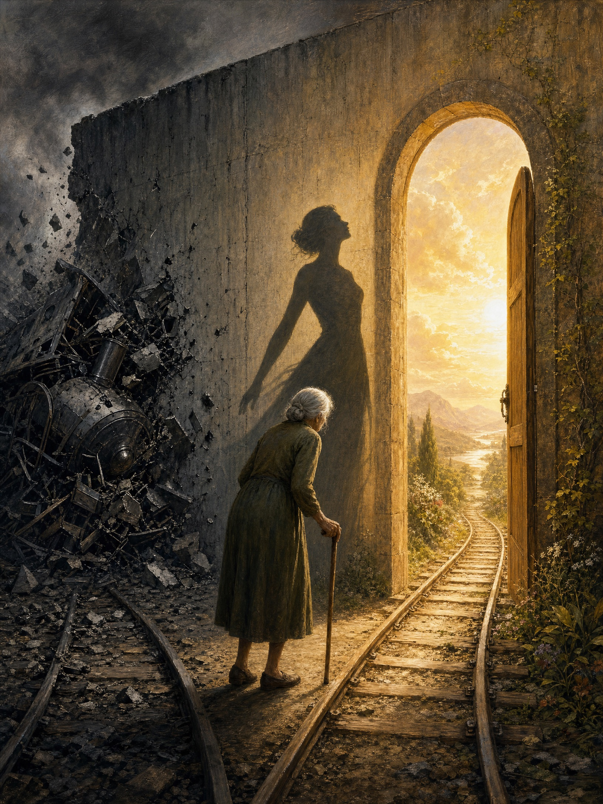
左半實牆盡頭幽暗、右半微啟之門透暖光——同一道界限，兩種理解。
死，是一扇門，還是一堵牆？
哲學面對門／牆，只能保持沉默 ——理性無法透視何者為真。但理性能洞察各選項的意義 ：
若是牆 ，人生再精采，結局就是去撞牆（＝卡繆的荒謬）；門 ，則自我的超越性、對真善美聖的嚮往、對永恆的盼望，都得到合理而融貫的理解。
孫教授演講提出，以〈未知死，焉知生〉（《科學人》2010/10）深化。
〈未知死，焉知生〉：門／牆四支線
① 以愛超越死亡 死亡最猙獰處，是奪走整個存在與意義；唯有在愛裡能撫平或超越——捨生取義、文天祥、林覺民〈與妻訣別書〉、耶穌。「人生無常，唯愛永恆。」
② 一廂情願，還是合理盼望？ 心靈消逝主義類比費爾巴哈「心理投射論」。孫教授反駁：渴望永恆不能證明 死後世界存在，但也不能反證它只是妄想 ；若無死後世界，一切意義、真善美聖、愛、文化文明都成「虛中之虛、幻中之幻」。
③ 靈魂與自我 「我」既內存又超越身體——從受精卵到 80 歲都是同一個「我」的身體，卻都不完全等於「我」。把身體的生物學死亡當成「我」的死亡真相，是唯物論的化約主義 。
④ 諾貝爾的訃聞 諾貝爾誤讀自己的訃聞（被當成「死亡商人」），於是改寫餘生想留下的東西——不是炸藥，是和平與光。「若今天是你的訃聞，你希望它怎麼寫？」
✍️ 對終極信念的衝擊：個人書寫
寫在《人生三問日誌》
回到開頭那一票——聽完之後：
(1) 我此刻傾向牆還是門 ？與開場投的票相比，有沒有鬆動，或更堅定 ？
(2) 這個答案，會怎麼改變我現在怎麼活 ？對我的終極信念 有什麼衝擊？
（個人書寫後，按 → 或空白鍵，進行下一步）
這場書寫，本身就是一次「為自己的終極信念負責」。
要能真誠站進虛無主義，需要相當的哲學解析度；多數人從沒有意識地選過。從開場投票、討論到此刻書寫，正是在提升解析度 ，把信念從「不假思索」帶向「自我覺察」。
示範：如何用「四面向」讀一則素材
從「學員蒐集影音庫」挑三則，練習用值得活的人生四大面向，讀出每則素材的位置與限度。
Emily Smith·意義四支柱（TED）——面向 ②③④。
不是看片，而是用四面向當「讀片的座標」——這正是把素養變成能力的練習。
捌
總結
確立終極信念有路可走（托爾斯泰五法）；最後，把今天收束成一句——人生無常，唯愛永恆。
理性的盡頭，轉向「超越」的信念
Jordan Peterson ：痛苦與荒謬是真實 的，不容否認；但愛與真理 ，有可能穿越痛苦與荒謬，把人帶向超越虛無的盼望。
當理性走到盡頭、無法肯定生命本身的意義，人並非別無選擇——他可以在「終極信念 」上，向超越者敞開。
人生不只是追求幸福而已There's more to life than being happy ｜ Emily Esfahani Smith ｜ TED
生命意義在於服務超越自我的事物 ，並透過自我超越活出最好的自己——而非只是追求幸福 。
意義的四大支柱 ：歸屬感、服務他人的目的、超越感（感受到更宏大的存在）、敘事（透過講述自己的故事來賦予意義）。
孫老師的回應： 對「值得活的人生」做了超越自我中心、乃至超越自我 的省思——四支柱正呼應終極理想與超越的信念。
確立終極信念的途徑（托爾斯泰五法）
理性思考 ——對門／牆、虛無與盼望的哲學追問。生命體驗 ——苦難、愛、失落中親身領會的真理。觀察眾生 ——看別人怎麼活、結局是不是你要的。服務利他 ——在付出與愛中，意義自然顯現。齊克果式信仰跳躍 ——在理性的盡頭，做出抉擇。
「人要潛水到生命真理的終極深處，
Tyson 把「去哪找意義」翻轉成「如何創造 意義」；Hamilton 談成功之外。
多元立場：不預設，但保持開放
佛教 ：涅槃基督宗教 ：天國儒家 ：天人合一無神論人本主義 ：在有限中創造意義
每一種終極信念，都支持一套不同的「該如何活」。立場：不預設特定終極信念，但鼓勵對各種立場保持開放與認識。
財富會消散、名聲會褪色、健康終將衰退——唯有真摯的愛，能穿越時光。
課後實踐作業（7/14 晚）
給一個對你重要的人
寫一封「若我明天即不在，我想對你說的一封信 」給一個對你重要的人，
（呼應序曲《一路玩到掛》與四大面向 ②「非自我中心的愛」。）
人生無常，唯愛永恆
是牆，還是門，沒有人能替你先走一趟回來；
孫效智
↑ 回到首頁
彩蛋·主題曲〈門與牆〉
〔主歌一〕
〔主歌二〕
〔副歌〕
〔主歌三〕
〔尾聲｜輕聲〕
〈門與牆〉——《生命的學問》概念專輯第二首；與序曲《一路玩到掛》的門／牆意象首尾相扣。
↑ 回到首頁